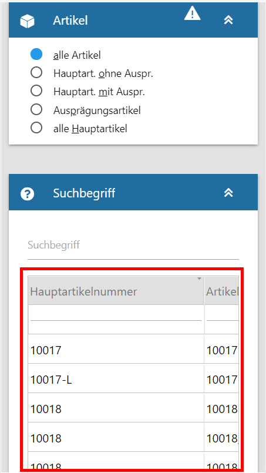
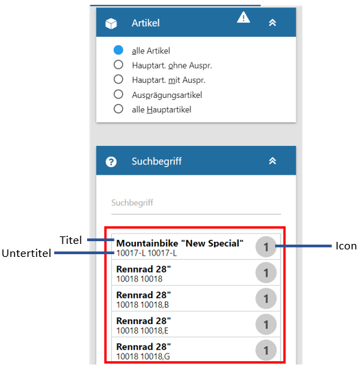
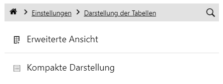
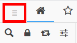
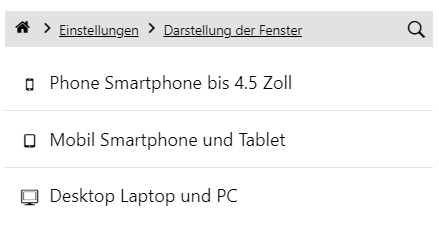
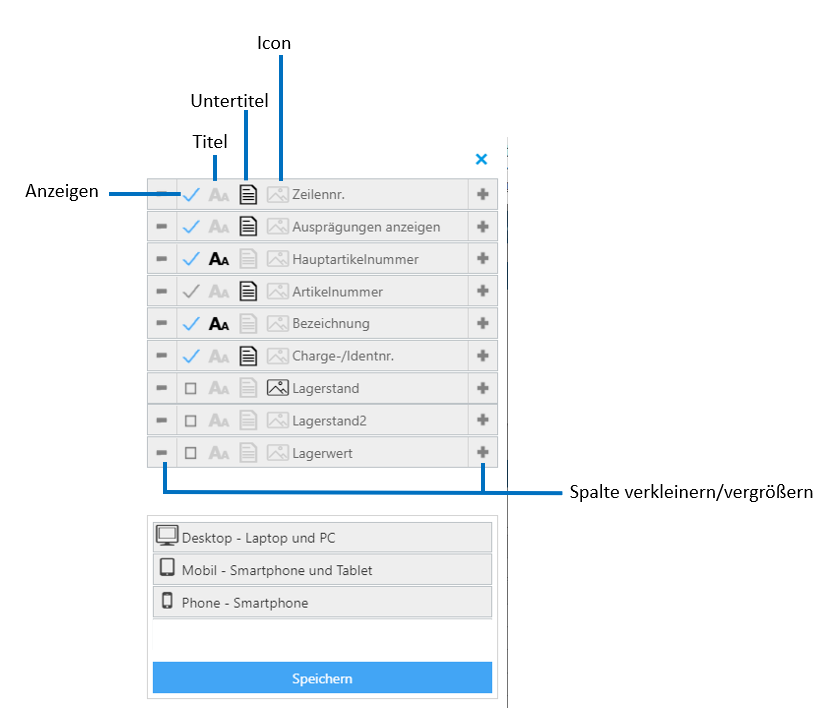

In der WinLine mobile kann zwischen zwei Darstellungsformen von Tabellen gewählt werden, der erweiterten und der kompakten Ansicht.
Die erweiterte Ansicht stellt die "normale" Tabellenansicht dar, wie sie auch in der WinLine vorkommt. Die kompakte Ansicht wurde vor allem für eine übersichtlichere und benutzerfreundlichere Darstellung von Tabelleninhalten auf mobilen Endgeräten, wo die Bildschirmbreite schmäler ist, konzipiert, kann aber auch für die Desktopansicht sinnvoll sein.
Auf Geräten mit kleineren Bildschirmen (z.B. Smartphones) können Inhalte klassischer Tabellen nicht komplett dargestellt werden und zum Einblenden nicht sichtbarer Elemente muss erst nach Links/Rechts gescrollt werden. Bei der kompakten Tabellenansicht wird der Inhalt der Tabelle mittels Titel/Untertitel/Icon in einer übersichtlichen Form dargestellt.
Die kompakte Ansicht ist nur für Tabellen verfügbar, wo sie auch sinnvoll ist und zur Übersichtlichkeit beiträgt.
Erweiterte Tabellenansicht kompakte Tabellenansicht


In der WinLine mobile kann über das Toaster Menü unter Einstellungen/Darstellung der Tabellen zwischen der kompakten und erweiterten Tabellendarstellung gewechselt werden, nach dem Umschalten ist ein Neustart notwendig.

Die Definition, welche Informationen als Titel, Untertitel und Icon jeweils für Desktop / Tablet / Phone angezeigt werden sollen, erfolgt über das Programm "Spalten anzeigen/verstecken", welches über das Kontextmenü der rechten Maustaste (Funktion "Spalten anzeigen/verstecken") aufgerufen werden kann. Damit die Anpassung in die WinLine mobile übernommen werden kann, ist ein Neustart des Clients notwendig.

Hinweis 1
In der WinLine mobile kann über das Toaster-Menü, welches rechts oben aufgerufen werden kann, unter Einstellungen/Darstellung der Fenster zwischen der Desktop-, Tablet- und Phone- Ansicht gewählt werden. Nach einer Umstellung der Darstellungsform ist ein Neustart notwendig.


Hinweis 2
Wird die WinLine auf einem mobilen Endgerät genutzt, kann der Rechtsklick über langes Antippen mit dem Finger ausgelöst werden und so die Funktion "Spalten anzeigen/verstecken" geöffnet werden. In diesem Menü kann, genau wie in der WinLine definiert werden, welche Informationen als Titel, Untertitel und Icon jeweils für Desktop / Tablet / Phone angezeigt werden sollen, ebenso ist es möglich die Spaltenbreite anzupassen, sowie die Spaltenreihenfolge per Drag & Drop zu verändern.

Achtung
Wird kein Feld als Titel, Untertitel oder Icon ausgewählt, wird diese Tabelle in der WinLine mobile automatisch in der erweiterten Tabellenansicht dargestellt.